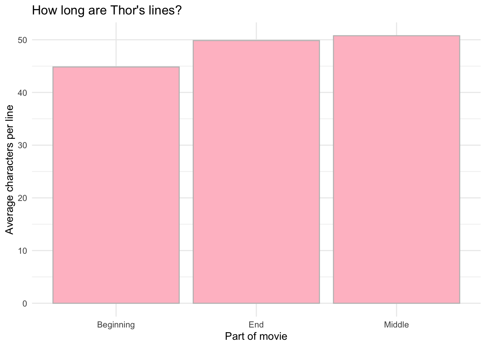
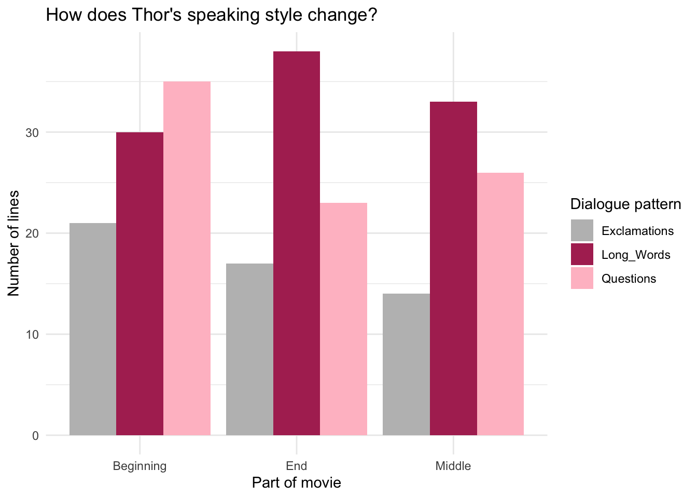
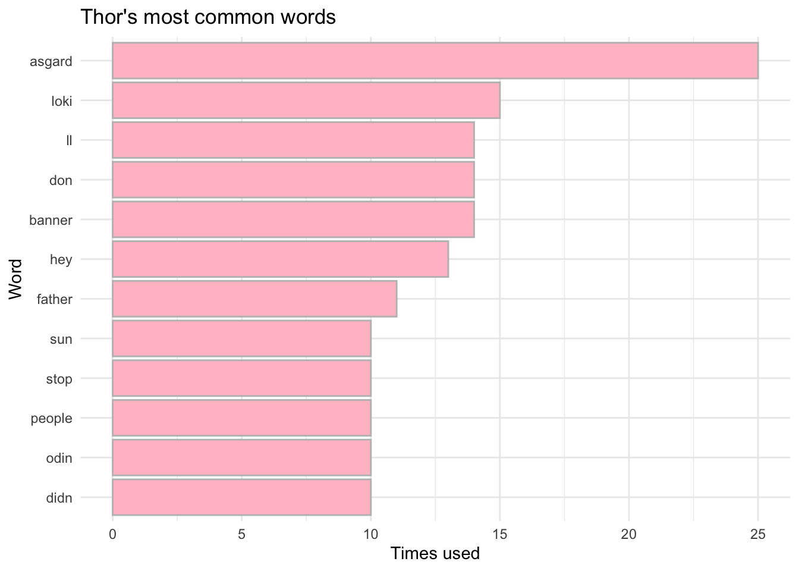
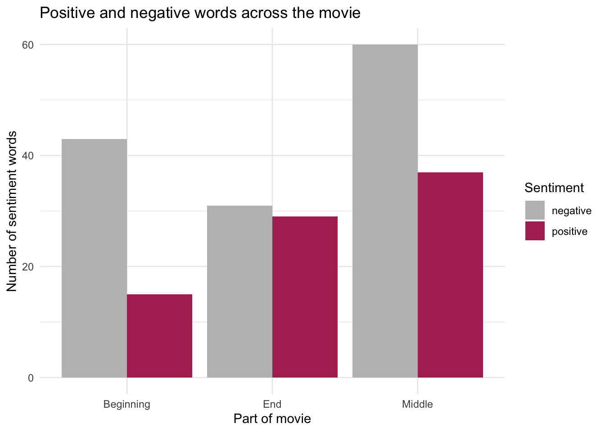

Show code
library(tidyverse)
library(tidytext)
ragnarok <- read_csv("miniproject1/ragnarok.csv")Exploring dialogue patterns through text analysis
Nima Dahir
Thor: Ragnarok is full of action, family drama, and funny conversations. I wanted to see whether Thor’s dialogue changes as the movie goes on. Does he ask more questions or use more exclamations at certain points? Does the length of his dialogue change? I also wanted to see which words he uses most often and whether his language becomes more positive or negative. To explore this, I used a dataset of dialogue from the movie. I treated the rows as being in the same order as the movie and divided Thor’s lines into three sections: beginning, middle, and end. This is an approximate division, not an exact division into scenes.
First, I kept the rows containing Thor’s dialogue and cleaned up the text to make it easier to analyze. I used str_to_lower() to make the text lowercase, str_replace_all() to remove punctuation, and str_length() to measure the length of each line. I also divided Thor’s dialogue into three sections: beginning, middle, and end.
thor <- ragnarok |>
filter(str_detect(str_to_lower(character), "thor")) |>
mutate(
clean_line = str_replace_all(str_to_lower(line), "[^a-z ]", " "),
line_length = str_length(line),
line_number = row_number(),
section = ifelse(line_number <= n()/3, "Beginning",
ifelse(line_number <= 2*n()/3, "Middle", "End"))
)I started by checking whether the length of Thor’s lines changes across the movie. A longer line does not necessarily mean a more important line, but it is one simple way to compare how much he says at different points.
line_lengths <- thor |>
group_by(section) |>
summarise(average_length = mean(line_length))
line_lengths |>
ggplot(aes(x = section, y = average_length)) +
geom_col(fill = "pink", color = "gray") +
labs(title = "How long are Thor's lines?",
x = "Part of movie", y = "Average characters per line") +
theme_minimal()
The chart compares the average length of Thor’s lines in each section. The average line lengths are 44.8, 49.9, 50.8 characters for beginning, middle, and end, respectively. The section with the tallest bar has the longest lines on average. This measures line length, not how emotional or meaningful the dialogue is.
Next, I wanted to see how Thor’s speaking style changes throughout the movie. I looked at how often he asks questions, uses exclamation marks, and uses longer words. I used str_detect() with three different regular expressions to identify these patterns. The regular expression \\? looks for question marks, ! looks for exclamation marks, and \\b[a-z]{8,}\\b looks for words containing eight or more letters. This helped me compare different patterns in Thor’s dialogue without focusing on specific words.
themes <- thor |>
mutate(
questions = str_detect(line, "\\?"),
exclamations = str_detect(line, "!"),
long_words = str_detect(clean_line, "\\b[a-z]{8,}\\b")
) |>
group_by(section) |>
summarise(
Questions = sum(questions),
Exclamations = sum(exclamations),
Long_Words = sum(long_words)
) |>
pivot_longer(
cols = c(Questions, Exclamations, Long_Words),
names_to = "theme",
values_to = "lines"
)themes |>
ggplot(aes(x = section, y = lines, fill = theme)) +
geom_col(position = "dodge") +
scale_fill_manual(values = c(
"Questions" = "pink",
"Exclamations" = "gray",
"Long_Words" = "maroon"
)) +
labs(
title = "How does Thor's speaking style change?",
x = "Part of movie",
y = "Number of lines",
fill = "Dialogue pattern"
) +
theme_minimal()
This chart lets me compare how Thor’s speaking style changes throughout the movie. I wanted to see whether he asks more questions, uses more exclamation marks, or uses longer words in different sections. These patterns might help show changes in how he communicates. However, just because Thor uses more exclamation marks or longer words does not necessarily mean he is more emotional or serious. The chart only shows how often these patterns appear in his dialogue.
For my first text-analysis application, I counted words. I used unnest_tokens() from tidytext to separate lines into words, removed common words such as “the” and “and,” and counted what remained.

The most common word after removing stop words is asgard, appearing 25 times. This chart shows which words Thor repeats most often after common stop words are removed. Frequent words can point toward important people or ideas, but a word count alone cannot tell us exactly what Thor means when he uses a word.
For my second text-analysis application, I used Bing sentiment analysis. The Bing list labels certain words as positive or negative. I compared the number of positive and negative words in each section.
sentiment_words |>
ggplot(aes(x = section, y = n, fill = sentiment)) +
geom_col(position = "dodge") +
scale_fill_manual(values = c("positive" = "maroon",
"negative" = "gray")) +
labs(title = "Positive and negative words across the movie",
x = "Part of movie", y = "Number of sentiment words",
fill = "Sentiment") +
theme_minimal()
This plot compares positive and negative word counts. It can help identify changes in the language Thor uses, but it cannot tell us exactly how Thor feels. For example, a character might use a negative word while making a joke. Since I divided Thor’s lines into three nearly equal groups, the sections have similar numbers of lines, but not necessarily the same number of words.
By looking at Thor’s dialogue in different ways, I can see how text analysis helps us ask questions about a movie beyond its plot. Line lengths show how much Thor says at a time, regular expressions help track topics like family and fighting, word counts show repeated language, and sentiment analysis compares positive and negative words. The biggest limitation is that these tools cannot understand sarcasm, context, or the meaning of a whole scene. Even so, these simple methods offer a useful starting point for exploring how Thor’s dialogue changes during Ragnarok.
---
title: "How Does Thor's Dialogue Change in Thor: Ragnarok?"
subtitle: "Exploring dialogue patterns through text analysis"
author: "Nima Dahir"
format:
html:
toc: true
code-fold: true
code-summary: "Show code"
code-tools: true
execute:
echo: true
warning: false
message: false
---
```{r}
#| label: setup
library(tidyverse)
library(tidytext)
ragnarok <- read_csv("miniproject1/ragnarok.csv")
```
## Introduction
Thor: Ragnarok is full of action, family drama, and funny conversations. I wanted to see whether Thor's dialogue changes as the movie goes on. Does he ask more questions or use more exclamations at certain points? Does the length of his dialogue change? I also wanted to see which words he uses most often and whether his language becomes more positive or negative. To explore this, I used a dataset of dialogue from the movie. I treated the rows as being in the same order as the movie and divided Thor's lines into three sections: beginning, middle, and end. This is an approximate division, not an exact division into scenes.
## Getting the dialogue ready
First, I kept the rows containing Thor's dialogue and cleaned up the text to make it easier to analyze. I used `str_to_lower()` to make the text lowercase, `str_replace_all()` to remove punctuation, and `str_length()` to measure the length of each line. I also divided Thor's dialogue into three sections: beginning, middle, and end.
```{r}
thor <- ragnarok |>
filter(str_detect(str_to_lower(character), "thor")) |>
mutate(
clean_line = str_replace_all(str_to_lower(line), "[^a-z ]", " "),
line_length = str_length(line),
line_number = row_number(),
section = ifelse(line_number <= n()/3, "Beginning",
ifelse(line_number <= 2*n()/3, "Middle", "End"))
)
```
## 1. Does Thor's dialogue get longer?
I started by checking whether the length of Thor's lines changes across the movie. A longer line does not necessarily mean a more important line, but it is one simple way to compare how much he says at different points.
```{r}
#| label: fig-length
#| fig-cap: "Average number of characters in Thor's dialogue lines by section."
#| fig-alt: "A bar chart with three sections of the movie on the horizontal axis and average dialogue-line length on the vertical axis. Taller bars mean Thor's lines contain more characters on average. Compare the three bars to see how his speaking length changes."
line_lengths <- thor |>
group_by(section) |>
summarise(average_length = mean(line_length))
line_lengths |>
ggplot(aes(x = section, y = average_length)) +
geom_col(fill = "pink", color = "gray") +
labs(title = "How long are Thor's lines?",
x = "Part of movie", y = "Average characters per line") +
theme_minimal()
```
The chart compares the average length of Thor's lines in each section. The average line lengths are `r paste(round(line_lengths$average_length, 1), collapse = ", ")` characters for beginning, middle, and end, respectively. The section with the tallest bar has the longest lines on average. This measures line length, not how emotional or meaningful the dialogue is.
## 2. How does Thor's speaking style change?
Next, I wanted to see how Thor's speaking style changes throughout the movie. I looked at how often he asks questions, uses exclamation marks, and uses longer words. I used `str_detect()` with three different regular expressions to identify these patterns. The regular expression `\\?` looks for question marks, `!` looks for exclamation marks, and `\\b[a-z]{8,}\\b` looks for words containing eight or more letters. This helped me compare different patterns in Thor's dialogue without focusing on specific words.
```{r}
themes <- thor |>
mutate(
questions = str_detect(line, "\\?"),
exclamations = str_detect(line, "!"),
long_words = str_detect(clean_line, "\\b[a-z]{8,}\\b")
) |>
group_by(section) |>
summarise(
Questions = sum(questions),
Exclamations = sum(exclamations),
Long_Words = sum(long_words)
) |>
pivot_longer(
cols = c(Questions, Exclamations, Long_Words),
names_to = "theme",
values_to = "lines"
)
```
```{r}
#| label: fig-themes
#| fig-cap: "Number of Thor's lines containing questions, exclamations, or long words in each section."
themes |>
ggplot(aes(x = section, y = lines, fill = theme)) +
geom_col(position = "dodge") +
scale_fill_manual(values = c(
"Questions" = "pink",
"Exclamations" = "gray",
"Long_Words" = "maroon"
)) +
labs(
title = "How does Thor's speaking style change?",
x = "Part of movie",
y = "Number of lines",
fill = "Dialogue pattern"
) +
theme_minimal()
```
This chart lets me compare how Thor's speaking style changes throughout the movie. I wanted to see whether he asks more questions, uses more exclamation marks, or uses longer words in different sections. These patterns might help show changes in how he communicates. However, just because Thor uses more exclamation marks or longer words does not necessarily mean he is more emotional or serious. The chart only shows how often these patterns appear in his dialogue.
## 3. Which words does Thor use most?
For my first text-analysis application, I counted words. I used `unnest_tokens()` from tidytext to separate lines into words, removed common words such as "the" and "and," and counted what remained.
```{r}
words <- thor |>
select(section, clean_line) |>
unnest_tokens(word, clean_line) |>
anti_join(stop_words, by = "word")
common_words <- words |>
count(word, sort = TRUE) |>
slice_head(n = 12)
```
```{r}
#| label: fig-words
#| fig-cap: "The 12 most frequent non-stop words in Thor's dialogue."
common_words |>
ggplot(aes(x = n, y = reorder(word, n))) +
geom_col(fill = "pink", color ="gray") +
labs(title = "Thor's most common words", x = "Times used", y = "Word") +
theme_minimal()
```
The most common word after removing stop words is **`r common_words$word[1]`**, appearing **`r common_words$n[1]`** times. This chart shows which words Thor repeats most often after common stop words are removed. Frequent words can point toward important people or ideas, but a word count alone cannot tell us exactly what Thor means when he uses a word.
## 4. Does Thor's language become more positive or negative?
For my **second text-analysis application, I used Bing sentiment analysis**. The Bing list labels certain words as positive or negative. I compared the number of positive and negative words in each section.
```{r}
sentiment_words <- words |>
inner_join(get_sentiments("bing"), by = "word") |>
count(section, sentiment)
```
```{r}
#| label: fig-sentiment
#| fig-cap: "Counts of words classified as positive or negative by the Bing sentiment lexicon, across three sections of Thor's dialogue."
sentiment_words |>
ggplot(aes(x = section, y = n, fill = sentiment)) +
geom_col(position = "dodge") +
scale_fill_manual(values = c("positive" = "maroon",
"negative" = "gray")) +
labs(title = "Positive and negative words across the movie",
x = "Part of movie", y = "Number of sentiment words",
fill = "Sentiment") +
theme_minimal()
```
This plot compares positive and negative word counts. It can help identify changes in the language Thor uses, but it cannot tell us exactly how Thor feels. For example, a character might use a negative word while making a joke. Since I divided Thor's lines into three nearly equal groups, the sections have similar numbers of lines, but not necessarily the same number of words.
## Conclusion
By looking at Thor's dialogue in different ways, I can see how text analysis helps us ask questions about a movie beyond its plot. Line lengths show how much Thor says at a time, regular expressions help track topics like family and fighting, word counts show repeated language, and sentiment analysis compares positive and negative words. The biggest limitation is that these tools cannot understand sarcasm, context, or the meaning of a whole scene. Even so, these simple methods offer a useful starting point for exploring how Thor's dialogue changes during Ragnarok.